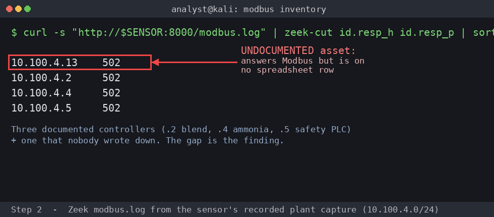

Exercise OTSOC-1.2: The Asset Nobody Documented
Scenario
The plant manager at Pecan Creek Creamery swears there are about a dozen devices on the floor and hands you the inherited spreadsheet to prove it. The passive sensor disagrees. Somewhere in the sensor's recorded capture of the plant control network is one Modbus device that answers on the wire but appears on no document and no spreadsheet.
You are the SOC analyst. You watch and you document. You do not attack and you do not actively scan: the ammonia PLC has faulted under Nmap before, and the plant cannot afford that again. Build your inventory from the passive sensor logs only.
Your data source is the passive sensor at http://sensor.pcc.local:8000/. The sensor serves Zeek logs generated from a recorded capture of the plant control network, so the hosts in those logs carry the plant's own addressing (10.100.4.x), not your session subnet. Use conn.log and modbus.log to enumerate every host that speaks, then compare the observed set against the inherited spreadsheet to find the gap. A captured host lines up with a live device in your Exercise Network panel by their shared last octet. If you want to cross-reference the operator HMI at hmi.pcc.local, the read-only kiosk account is operator / PecanCreek#2026.
Why this matters
Asset inventory is the foundation of every OT security program, and in OT it is harder than in IT because you cannot just scan. A device the plant forgot is the device an attacker loves: it sits outside change control, nobody alerts on its traffic, and its odd behavior reads as background noise. Spare controllers wired in "temporarily" during a line expansion and never documented are a classic finding in real plant assessments.
The discipline being trained is reconciliation. The wire tells you what is really there; the spreadsheet tells you what someone believed was there. The delta between them is your finding. Producing that delta from passive logs alone, with not one active packet sent, is exactly how an OT analyst inventories a plant that cannot tolerate a scan. The undocumented Modbus host answers like the documented blend tank, so you confirm its role from a single read-only ident query rather than guessing or probing.
| Credentials in scope | Username | Password | Where it is used |
|---|---|---|---|
| Operator HMI kiosk | operator |
PecanCreek#2026 |
Read-only cross-reference at hmi.pcc.local (optional) |
Learning Objectives
- Enumerate every talking host from the passive sensor logs
- Compare the observed set against the inherited spreadsheet
- Identify the one undocumented Modbus device in the traffic
- Infer its role from its protocol behavior without active scanning
- Compose the flag from the device last octet and Modbus unit id
Walkthrough
Step 1: Set the sensor variable
Read the sensor IP from the Exercise Network panel into a shell variable, the same way you did on your first shift. Every read in this exercise goes through the sensor.
Step 2: Enumerate every Modbus responder
The inherited spreadsheet claims one blend-tank controller. The wire is the authority, so pull the Zeek modbus.log and list every host that actually answered Modbus. Watch the responder column closely: you are counting distinct Modbus devices, and the count is the whole point.
Kali - list every Modbus responder
Expected output (the capture uses the plant control network 10.100.4.0/24)
Four hosts answer Modbus on 502. The blend tank, the ammonia BPCS, and the safety PLC account for three of them. The fourth responder, the one ending in .13, is not on the documented list at all. Confirm it the same way with conn.log so you are sure it is a real bidirectional flow and not a stray packet.

Kali - confirm the same host in conn.log
A row for the .13 host with a real connection state confirms the device is genuinely talking, not a single dropped probe. You now have an observed Modbus set of four where the spreadsheet expected one.
Step 3: Reconcile against the documented list
Lay the observed responders next to the inherited spreadsheet. Match every documented device to an observed IP; the responder left over with no spreadsheet row is your undocumented asset.
Reconciliation:
Observed IP Modbus 502 On the spreadsheet? Identified as offset .2 yes yes mix.pcc.local (blend tank) offset .4 yes yes ammonia.pcc.local (BPCS) offset .5 yes yes sis.pcc.local (safety PLC) offset .13 yes no undocumented device
The host at offset .13 answers Modbus but appears on no document. Record its last octet, 13. That is half of your flag; the other half is the Modbus unit id it answers on, which you confirm next with one safe read.
Step 4: Confirm the role with a single read-only ident query
Passive logs prove the device exists and speaks Modbus. To confirm its role, a Modbus/TCP holding-register controller, you issue exactly one read-only query: function code 3 (read_holding_registers) against its vendor ident block. A read is safe; a write is not. You send one request, read the answer, and disconnect. Watch the printed string: a documented-looking vendor ident proves the undocumented host is the same model of blend-tank controller.
Kali - one read-only FC3 ident query against the undocumented host
# The capture showed the undocumented host ending in .13. Query the LIVE
# device: use the Exercise Network panel IP whose last octet is .13.
AUXMIX=<your panel IP ending in .13>
python3 - <<'PY'
import os
from pymodbus.client import ModbusTcpClient
host = os.environ.get("AUXMIX")
c = ModbusTcpClient(host, port=502)
c.connect()
# FC3 read of the vendor ident block on Modbus unit id 1
r = c.read_holding_registers(99, 4, slave=1)
ident = ''.join(chr((x >> 8) & 0xFF) + chr(x & 0xFF) for x in r.registers).rstrip('\x00')
print("unit 1 ident:", ident)
c.close()
PY
The ident string matches the documented blend tank's vendor block, and the query succeeded on Modbus unit id 1. The role is confirmed from behavior, not assumed: a holding-register controller answering as a second blend-tank PLC. One careful read was enough; you never wrote a register.
Reads only
Function code 3 is a read and is safe. Function codes 5, 6, 15, and 16 are writes and are forbidden on a live plant in this track. Do not run an Nmap service scan against any Modbus host here; the ammonia PLC has faulted that way before.
Output Interpretation
- The wire showed four Modbus responders where the spreadsheet documented three, and the delta is the finding
- A single read-only FC3 ident query confirms role without risk; the vendor block matching the documented blend tank proves the undocumented host is a second controller of the same type
- The undocumented device answers on Modbus unit id 1, the same unit id as the documented tank, which is why it would blend invisibly into expected traffic if you only watched aggregate Modbus volume
- An asset outside change control is unmonitored and unpatched; documenting it is the deliverable, the flag only proves you found it
Analysis Questions
1. Why is an undocumented OT asset a security problem and not just a paperwork problem?
Reveal answer
A device nobody documented is a device nobody monitors, patches, or alerts on. It sits outside change control, so its traffic is never baselined and an attacker operating through it blends into noise. Inventory completeness is the precondition for every other control: you cannot defend what you do not know exists.
2. You confirmed the device with one FC3 read instead of an Nmap scan. Why does that matter on a live plant?
Reveal answer
A well-formed single read against a known register is exactly what the PLC expects from its master and carries minimal risk. An Nmap service scan sends malformed and unexpected probes across many ports and function codes, which is what faulted the ammonia PLC before. Restraint, one approved read, gets the same confirmation without the production risk.
3. The undocumented host answers the same vendor ident and unit id as the documented blend tank. What does that suggest about how it got there?
Reveal answer
An identical model on the same unit id is the signature of a spare or staging controller wired in during a line change and never recorded. It is benign in origin but dangerous in posture: identical fingerprints mean signature-only detection cannot tell the two apart, so the SOC needs address-level inventory to keep them distinct.
Capture the Flag
You compose the flag from two facts you established, both without writing to anything. The first is the last octet of the undocumented device, which your reconciliation table pinned at 13. The second is the Modbus unit id it answered your read-only ident query on, which the FC3 query confirmed as 1. Combine the two descriptive facts into the masked form below.
Flag format:
OCR{undocumented_host_..._unit_...}
Take the last octet and the unit id you confirmed and assemble the flag, then submit it in the OCR platform.